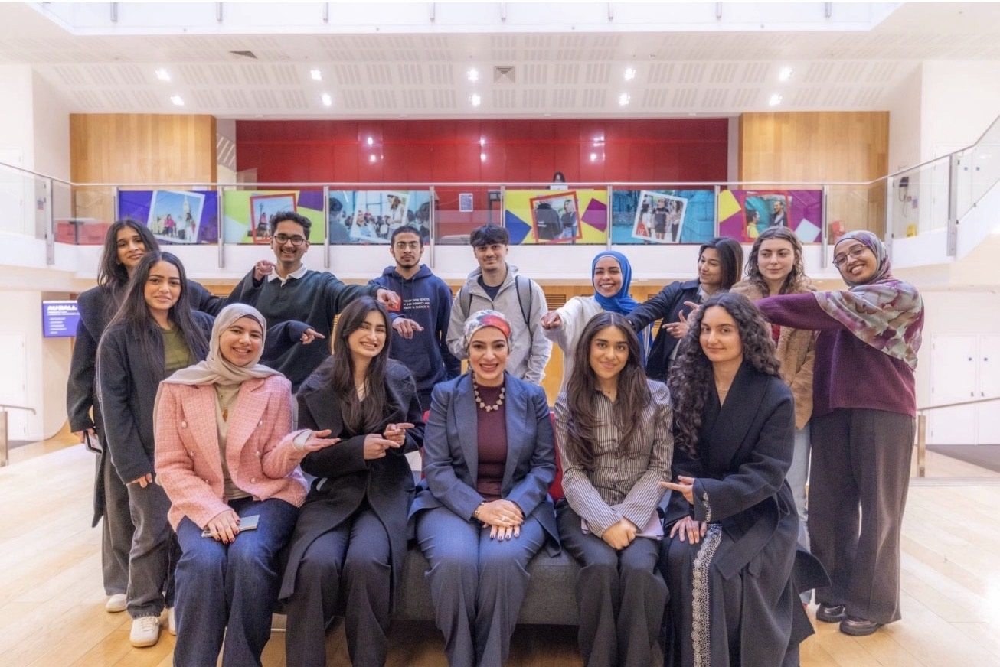

Mentorship
One hour,
one to one
A small number of one-to-one sessions, offered on a first-come basis.
They are for people at a hinge point: moving between sectors, walking into a room where the rules are not written down, taking a first board seat, or returning to senior work after a break. I have made each of those moves myself, and I know which parts of the advice usually given about them are useless.
An hour, in confidence, on whatever you actually need to discuss.
All proceeds support initiatives advancing girls' education in vulnerable communities.
Booking and payment will be handled here once the page is live.
